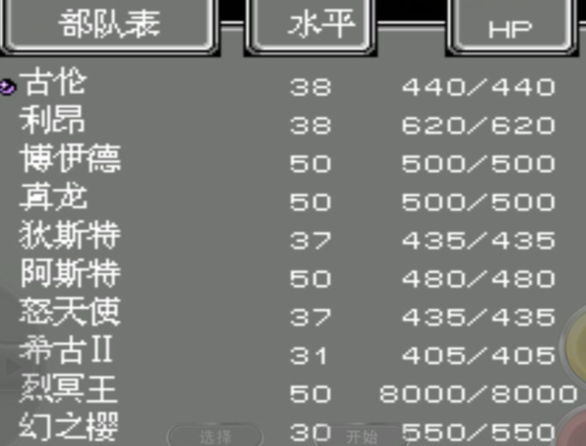

第一关
铠第五回合结束增援，满足敌机数量≥5架且铠能攻击到我方机体这两个条件，铠不会撤退！想轻松点的话，第三回合和第四回合卡一下位，不要让上面两个敌机下来，那样就很轻松了
第二关
萨拉第二回合结束增援，我方梅尔第三回合结束增援，第四回合结束后萨拉撤退！
第三关
当敌机数量≤3的时候，回合结束铠退！利用反击下回合全灭
第四关
夫岛第四回合结束撤退。铠茵第二回合结束增援，艾玛劝降！建议给凯茵击落岛夫和萨拉到7级
第五关
第四回合围住岛夫，不给萨拉攻击到岛夫，那样卡姆就不会出现！
第六关
卡姆第三回合结束行动，第四回合结束撤退！卡姆给艾玛击落升级出传真！
个人认为全灭不了，开场干扰过去杀的剩下一个炮台，第三回合需要全体往左跑，就算有梅尔的强攻在手，想要击落卡姆也需要全体攻击一轮才能击落卡姆，母舰和隆盛会爆机，这时候也只能等死了
有一个方法能剩下一个炮台全灭敌方，那就是第五关购买传感器，全给铠茵，这样就能剩下一个炮台全灭敌机，可是这样就浪费了15个传感器，得不偿失，划不来，吃大亏，还不如不暴机击落两个炮台！
第七关
传真你想升级的某个机体下去吃一个15级小兵和两个12级小兵（sl一下npc位置，让npc能反击右边4个敌机，这样就能收掉两个12级小兵）
第八关
唯一注意的就是商店，建议进去一趟，推荐全买超合金W！！！没有比这更加舒服的事情了，至于能买多少就看你前面关卡的杀敌数了！
第九关
第四回合结束前，卡姆血量低于100时不会撤退
第五回合开始，卡姆血量低于100时撤退。
1、第四回合结束前击落卡姆：想要无损给隆盛击落卡姆的话必须满足7级萨拉；母舰也只有这种情况才能击落卡姆。
2、第五回合之后无损击落卡姆只有铠茵和梅尔
3、凯恩上面两种情况都能无损击落卡姆，个人认为除了他们4个，没有列出来的其他人击落卡姆达不到无损而且只能在前四回合
4、个人认为全灭不了，想杀卡姆那么上面的10级铠是没办法击落的，10级的艾玛有6个回避，梅尔有2个回避，萨拉和铠茵有防守，可以用这些打反击拖回合，但是要击杀卡姆，所以要留着梅尔或铠茵的1个强攻！
第十关
全灭小兵获得母舰隐藏要素1，这个不难，难就难在挑战，把伊娜血量打到200以下，完成挑战会奖励一个助推器和一个电子盾！由于伊娜远程有间无，近战有阻击电波，所以要打掉伊娜血量只能是主动攻击。记得去商店买磁性涂料，免得浪费钱！
有两点必须满足；
1、个人以为凯茵必须10级以上，有120sp出热血和强攻！
2、个人以为母舰、隆盛、梅尔站位:母舰战下位的话，梅尔和隆盛的话站上和右,最后是boss伊娜必须在加血站上移动双杀艾玛和母舰，这样才能完成挑战！
第十一关
没什么可说的，抢钱就行了，梅尔和艾玛直接去下面杀，其他人上车传真，中间山地的3只用凯茵搞定其他人右下角，boss出来直接精神呼上去搞定！
开始升级萨拉很重要
第十二关
马休血量低于50回合结束增援铠！
给萨拉升级很重要
第十三关
第六回合结束过关，拉米娅和铠二选一，当然选着拉米娅隐藏！击破拉米娅获得隐藏要素1
萨拉吃掉拉米娅萨拉19，目标达成！
第十四关
打掉两个AI之后，用贝克劝降诺思！记得所有小兵给罗伊！
第十五关
罗伊劝降温妮且过关温妮存活，获得温妮隐藏要素1
记得所有小兵都给罗伊！
第十六关
1、击落两面发电镜，boss开始掉血，贝克劝降布托！
2、拉米娅不能移动且过关的时候血量低于50，获得拉米娅隐藏要素2
3、拉米娅上面两格是隐藏商店，贝克进！
4、飞升相关，两个24级boss给罗伊吃，卡经验不能升级,大boss给卡姆！
第十七关
罗古最后给卡姆杀升级30级出干扰，杀之前进商店买用掉钱！小兵尽量给罗伊反击收掉！
第十八关
25级小兵给罗伊卡经验，20关飞升相关！如果之前你不辞辛苦的给罗伊吃小兵，这时候不用再吃23级小兵和两个18级小兵了，24级罗伊经验卡在200以内就能在20关飞升到50级！建议多出来的23级小兵可以给萨拉，也可以给凯茵到15级！
第十九关
难点就是妮妮斯隐藏不好拿，想要拿妮妮斯隐藏那就必须扛得住妮妮斯，所有要针对这里升级，萨拉前面升到19级（打得好的同学18关吃一个23级小兵到20级，没到就把连个18级的也吃了）吃4个M合金不会被妮妮斯双击。主要升级梅尔到30级稍微卡一下经验差700左右升级就好了，击落妮妮斯会到37级（为了不浪费22关妮妮斯经验，当然梅尔等级越高22关就越容易），其次给凯茵和卡姆吧，22关开场凯茵要24级。好了重点来了，妮妮斯有阻断反击，所以只能靠主动攻击输出，而且只有诺思可以输出，布托和萨拉轮流抗伤害，其他人打镜子！
第二十关
1、占领7个特殊位置，获得母舰隐藏要素2，和第十关隐藏挂钩！
2、罗伊吃所有小兵外加4面镜子飞升！
第二十一关
1、Boss右边为隐藏商店，罗伊进去和其他人进去所卖道具不一样！
2、尽量给凯茵升级到24级
3、第二阶段芬妮、贝克和罗纳血量全部低于200才能触发隐藏
第二十二关
1、左下角隐藏商店，只有布西可以进去！
2、罗伊劝降温妮，并且同回合击落贝壳，妮妮斯在场完成隐藏1。然后下一回合击落妮妮斯，罗伊劝降温妮，温妮加入，完成隐藏2（如果用卡姆劝降贝克，再用罗伊劝降温妮可直接加入我方，可这样的话妮妮斯隐藏没有了）
3、妮妮斯第五回合结束必跑路，
4、中间镜子打爆妮妮斯必跑路，
5、打掉两个AI之后妮妮斯掉血
综合来看，所以第三种情况才是击杀妮妮斯的关键，其次必须满足凯茵24级够了，梅尔27级以上！！！梅尔等级越高，击杀妮妮斯越容易！杀贝克用一个凯茵的热血就OK了，最后用伊娜强攻收掉贝克，然后其他人输出妮妮斯，记得第四回合结束开干扰用梅尔骗取妮妮斯反击，这样就能比正常输出打掉妮妮斯来的轻松！
第二十三关
1、完成隐藏的方式要在第二波暴龙增援后全灭小兵，然后本回合卡姆和梅尔贴身妮妮斯，回合结束触发剧情完成隐藏！这里的第一波暴龙位置是左边两个，右边两个叫第二波，这个第二波所在的回合是相对第一波暴龙增援的回合，所以不管增援多少暴龙，但是你必须在第二波暴龙增援的回合全灭小兵才能在本回合触发隐藏！触发隐藏后开始在拉米娅为中心的四角增援真修。
2、威尔掉血条件是敌机数量≥10
3、左边有一个商店
这关比较简单，建议给等级最低的艾玛升级,威尔boss给拉米娅！记得别打阵地战，传送拉米娅去右下角威尔也拉去右下角，妮妮斯拉去右上角，这样就简单了
第二十四关
1、上面商店只有拉米娅能进去，里面有大宝贝！！！请务必第一时间去购物，买传感器II，除了加血机所有人强度满，为第二阶段做准备！
2、第一阶段全灭小兵回合结束有剧情，剧情之后就能击杀妮妮斯了，然后把妮妮斯拉到左下角再击杀进入第二阶段，第二阶段开始8个小boss只能一个一个集火杀，而且是一回合我方能移动，一回合不能移动。由于妮妮斯是不移动的，在左下那里是卡位还是蹲墙角都随你，击杀4个AI之后妮妮斯开始掉血，并且每回合增援两个神意。第二阶段妮妮斯谁杀都是满级，那些AI自行分配，建议艾玛到31级满精神！拉米娅37级出干扰，最后在击杀妮妮斯之前去商店一趟，属性道具这是最后的划算商店
第二十五关
第一阶段：我方人员占领敌方基地四周的四颗树，罗古和亚吉哈贴身之后开始掉血，四棵树的人不能移动，否则boss满血，第三回合开始四棵树方向增援4只暴龙，最后地图炮一次扫掉亚吉哈和罗古（想吃经验可以先击破罗古再杀亚吉哈，最后再把他们拉倒一起用地图炮扫掉）触发剧情，敌方增援温德鲁和温多罗，回合结束敌方增援4个AI，下回合开始敌方无限增援6个小兵，打掉4个AI，温多罗开始掉血，打掉温多罗过关！！！速度一定要快，4回合内要完成第二阶段，拖久了就gameover！！！快过关去一趟商店推荐买正义吧，属性估计都买的差不多了吧
第二十六关
1、第一阶段：我方拉米娅（不能移动）、伊娜（不能移动）和妮妮斯脚下的3个堡垒必须要有人占领，温多罗脚下的宇宙卫星也需要有人占领，这4个点占领之后，再全灭敌军进入第二阶段。增援情况：
一、第二回合开始左下角和右上角增援1个，
二、中间妮妮斯四周增援4个，
三、左上角堡垒右边增援2个，
2、第二阶段：第二阶段开始敌军增援21关的6个好友加贝壳一共7人，伊娜和拉米娅恢复行动，且每回合增援如下：
一、左下角和右上角都是增援2个
二、中间妮妮斯增援5个
三、左上角增援3个
占领四个堡垒的我方人员不能移动，再全灭敌军进入第三阶段
3、第三阶段：第三阶段开中间妮妮斯头顶增援3个50级神意AI，占领堡垒的4个人必须走开，然后灭掉3只神意之后进入最后阶段
4、第四阶段：进入第四阶段，敌方所有地图四个角落分别增援伊娃、浦西、阿露菲米、温德鲁4个小boss（不会移动），中间堡垒增援大boss冥魂驾驶监察官，身边带着3个AI和小boss珍妮，每回合增援上下左右中个两个超�派褚猓�我方需要先灭掉3个AI，然后在某个回合需要让5个小boss能攻击到我方，那么下回合开始大boss冥魂开始掉血，在大boss冥魂掉血期间，5个小boss全部不能击杀且能攻击到我方，否则大boss就满血切记，杀大boss只需要凯茵两个热血，梅尔一个热血一个强攻，再配合妮妮斯两发热血和地图炮两回合击落！
5、25关买了3个正义，最后一关可以有4个干扰，第一阶段可以不用干扰，最后一阶段只需要1个干扰修可以了，所以还有三个干扰你可以全部用在二阶段，总之留一个干扰到第四阶段就行，其他随你分配，还有除了凯茵留两个热血，梅尔留一个热血一个强攻之外，其他人精神全部可以用完，怎么使用看你们自己，总的来说精神充足！
6、附一张最后一关开场部队表 